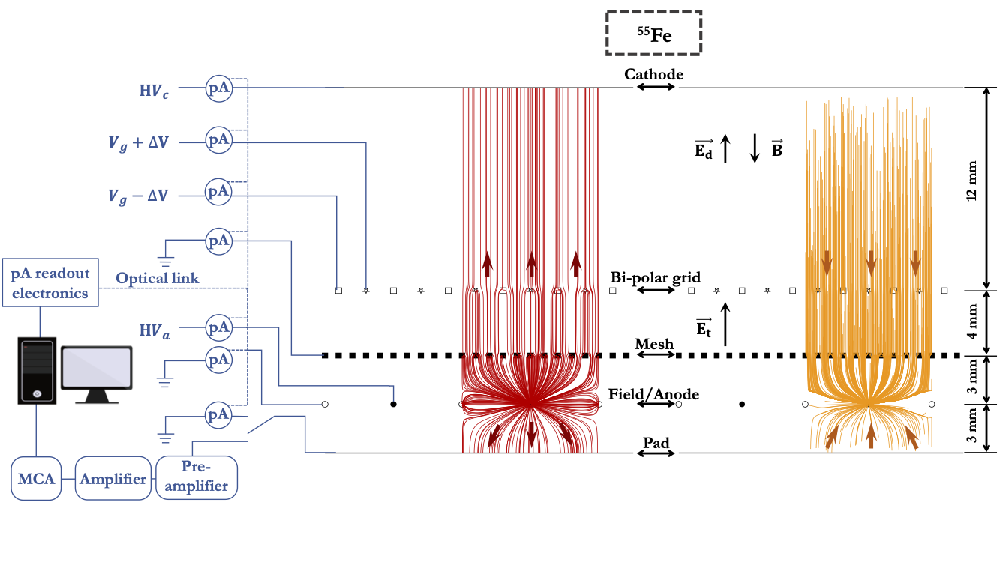
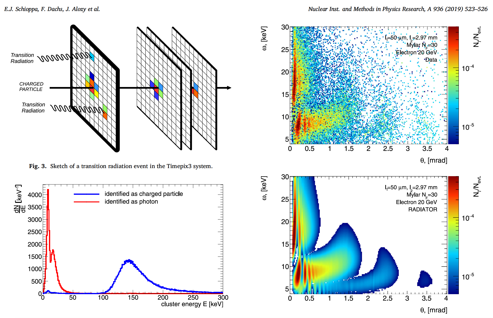
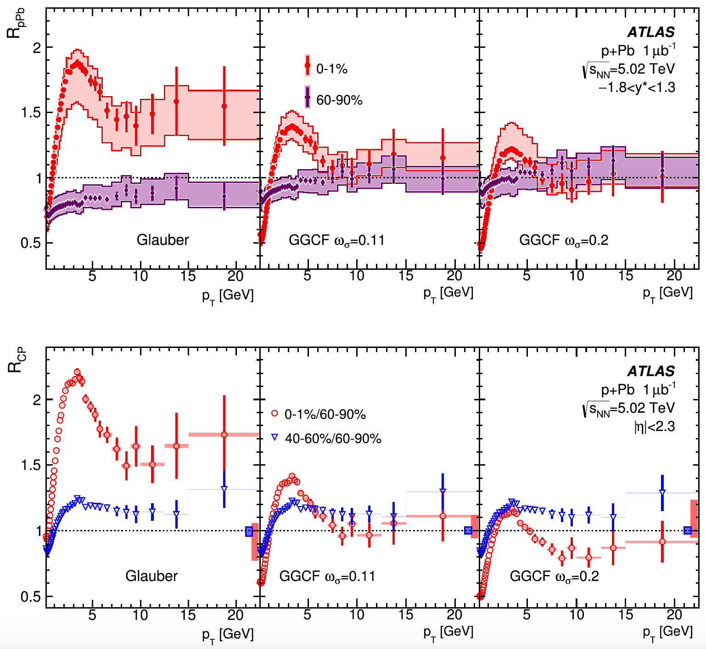

I am an experienced researcher with a vast background in detector development, data analysis
(ATLAS, sPHENIX, STAR), and physics-based simulations.
In my work, I adhere to the principle of adaptive planning and strive to learn and develop new skills.
I am curious, self-motivated, and adaptive to a new environment.
Currently, I am an Assistant Physicist at Brookhaven National Laboratory, working on STAR data analysis,
EIC/ePIC detector development and commissioning.
SCIENTIFIC INTERESTS
- Detector physics
-
Detector development, construction of scientific equipment (tracking and particle identification)
for particle physics and nuclear experiments, detector performance optimization, in-situ detector
performance control systems, detector aging.
- Particle physics
-
Physics of high-energy interactions, global event characterization, analysis of experimental data,
particle tracking and particle identification at high particle density and high luminosity.
- Software development
-
Software for fast data reconstruction (tracking, identification) and detector calibration
involving AI/ML techniques.
EXPERIENCE
- 2024 – Present
-
Assistant Physicist at Brookhaven National Laboratory
- Leading STAR experiment data analysis (C++, Bash, HTCondor)
- Leading detector development for beam monitoring for the safety of the future Electron Ion Collider detector (C++, Bash, Python)
- Led detector development for the GridPix detector based on Timepix technology (LDRD C 2025 project)
- Design and development of silicon detectors for polarimetry
- Control-Account Manager (CAM) for ePIC detector non-beam commissioning: 17 FTE, $11M
- 2022 – 2024
-
Senior Postdoctoral Associate at Stony Brook University
- Led construction and commissioning of the sPHENIX Time Projection Chamber (TPC)
- Led technical maintenance of the TPC, worth $0.5 million, keeping it fully functioning
- Led R&D for ion-backflow (IBF) suppression for the EIC 2nd detector's GridPix TPC
- Developed the calibration strategy for detector subsystems as a member of the sPHENIX calibration task force
- Developed sPHENIX TPC calibration and tracking software (C++, Bash, HTCondor)
- Built a DAQ system for the modules testing setup at Stony Brook University: script-based control of the gas system, x-ray tube, picoammeters, and high-voltage supply (C++, Bash, Python)
- 2018 – 2022
-
Postdoctoral Researcher at Weizmann Institute of Science
- Led the laboratory effort for detector development and production for the sPHENIX TPC; produced 130 framed GEMs
- Designed and developed the bipolar mesh, improving ion-backflow suppression in the TPC down to 0 (published 2020)
- Produced detector components under ISO 6 class 1000 conditions for the sPHENIX TPC
- Developed the calibration strategy for all detector subsystems as a member of the sPHENIX calibration task force
- Developed simulations of charge-flux distributions in the detector for electric field distortion calculations (C++, Python, Bash, HTCondor)
- 2010 – 2018
-
Research Staff Member at NRNU MEPhI
- Led the analysis of experimental data from the ATLAS experiment at CERN (statistical methods, C++, ROOT)
- Maintenance and calibration of the Transition Radiation Tracker (TRT) of the ATLAS experiment
- Developed a unique Monte Carlo simulation of radiation detection for detector R&D, published in 2019 (statistical methods, C++, ROOT)
- Suggested and developed a social networking portal for scientific collaboration at NRNU MEPhI
EDUCATION
- 2010 - 2018
-
Graduate student at the National Research Nuclear University MEPhI, Moscow, Russia (NRNU MEPhI)
Ph.D. in Physics of Atomic Nucleus and Elementary Particles:
“Charged particle spectra and nuclear modification factors in proton-nucleus (p+208Pb) interactions at an energy of 5.02 TeV
per pair of nucleons in the ATLAS experiment at the LHC” under the supervision of Dr. A. Romaniouk, defended 19.03.2018.
- 2004 - 2010
-
Undergraduate student at NRNU MEPhI
Diploma equivalent to the M.S. in Atomic Nucleus and Particle Physics:
“Study of the four-lepton decay of the Higgs boson by Monte Carlo simulations in the ATLAS experiment at the initial LHC energies”
under the supervision of L.R. Flores Castillo (University of Wisconsin), NRNU MEPhI internal supervision of S. Smirnov, defended 01.05.2010.
- 1994 - 2004
-
High school student at “Lyceum” № 1523, and high school № 1640, Moscow, Russia
TEACHING EXPERIENCE
- 2015 – 2018
-
Teaching Assistant at NRNU MEPhI
- Lectures and classes on “Selected chapters of nuclear physics”;
- Students supervision: bachelors 2, master 1
INTERNATIONAL COLLABORATIONS
- 2024 – Present
-
STAR experiment at the RHIC facility at BNL
Cold QCD group: single spin asymmetry for J/ψ production in p+p and p+Au collisions.
- 2018 – Present
-
sPHENIX experiment at the RHIC facility at BNL
sPHENIX TPC design, construction and commissioning with the reduced Ion Back Flow;
simulation studies of the space charge in the TPC.
- 2009 – 2020
-
ATLAS experiment at the LHC CERN
Transition Radiation Tracker (TRT) performance studies:
software development, detector performance optimization;
Preparation for the TRT test beams at the SPS (2012, 2016, 2017, 2018);
Research for the Heavy Ion working group: data validation, physics data analysis
LONG TERM VISITS
- Since 2009
-
Visiting scientist at CERN (2–4 months per year)
Detector maintenance and performance studies; physics data analysis; data-taking shifts.
- 2012, 2014
-
Visiting student at the Weizmann Institute of Science (about 2 months each)
Physics data analysis; preparation of results for publication.
INTERNATIONAL SCHOOLS
- May 2012
-
4th Berkeley School on Collective Dynamics in High-Energy Collisions
Lawrence Berkeley National Laboratory, United States, May 14–18, 2012.
- Feb 2012
-
15th Moscow International ITEP School of Physics
Moscow, Russia, February 14–21, 2012.
PUBLICATIONS
Author of the ATLAS Collaboration (2011–2021). Full publication list on
Google Scholar.
Selected journal publications with substantial personal contribution (10)
- A. Boldyrev et al. (incl. E. Shulga), “Tracking performance of GasPixel detectors in test beam studies”, NIMA 807, 47-55 (2016)
- A.A. Savchenko et al. (incl. E. Shulga), “X-ray transition radiation from a polypropylene radiator: experiment and Geant4”, Phys. Atom. Nucl. 81, 1618 (2018)
- J. Alozy et al. (incl. E. Shulga), “Identification of particles with Lorentz factor up to 104 with TR Detectors based on micro-strip silicon detectors”, NIM A 927, 1-13 (2019)
- J. Alozy et al. (incl. E. Shulga), “First measurements of the spectral and angular distribution of TR using a silicon pixel sensor on a Timepix3 chip”, NIM A 936, 523-526 (2019)
- F. Dachs et al. (incl. E. Shulga), “Transition radiation measurements with a Si and a GaAs pixel sensor on a Timepix3 chip”, NIM A 958 (2020)
- J. Alozy et al. (incl. E. Shulga), “Studies of the spectral and angular distributions of transition radiation using a silicon pixel sensor on a Timepix3 chip”, NIM A 961 (2020) 163681
- E. Shulga et al., “Measurement of the Ion Blocking by the Passive Bipolar Grid”, IEEE Trans. Nucl. Sci. 68, 1, 59-69 (2021)
- D. Baranyai et al. (incl. E. Shulga), “Fast spark-detection system for GEM detectors”, NIM A 1072, 170171 (2025)
- Y. Huang et al. (incl. E. Shulga), “Variable Rate Neural Compression for Sparse Detector Data”, Patterns 7, 3, 101452 (2024)
- F. Rathmann et al. (incl. E. Shulga), “Eliminating beam-induced depolarizing effects in the hydrogen jet target for high-precision proton beam polarimetry at the Electron-Ion Collider”, Phys. Rev. Accel. Beams 29 (2026) 2, 021001
Conference proceedings (6)
- E. Shulga for the ATLAS Collaboration, “Centrality dependence of charged particle production in proton-lead collisions measured by ATLAS”, NPA 926 (2014) 64–72
- E. Shulga for the ATLAS Collaboration, “Charged particle production in Pb-Pb and p-Pb collisions measured by the ATLAS detector”, JoP: Conference Series 668 (2016), no. 1, 012078
- E. Shulga for the ATLAS Collaboration, “Centrality dependence of low-pT and high-pT particle production in proton-lead collisions with ATLAS”, NPA 956 (2016) 565-568
- E. Shulga for the ATLAS Collaboration, “Charged particle production in p+Pb collisions measured by the ATLAS detector”, JoP: Conference Series 798 (2017), no. 1, 012066
- N. Belyaev et al. (incl. E. Shulga), “Measurements of angular distribution and spectrum of transition radiation with a GridPix detector”, JoP: Conf. Series 934 (2017), no. 1, 012049
- K. Dehmelt et al. (incl. E. Shulga), “Passive Gating Grid for Ion Back Flow Suppression in High Luminosity Collider Experiments”, 2019 IEEE Nuclear Science Symposium and Medical Imaging Conference (NSS/MIC)
Preliminary results (2)
- ATLAS Collaboration, “Charged hadron production in p+Pb collisions at √sNN=5.02 TeV measured at high transverse momentum by the ATLAS experiment”, ATLAS-CONF-2014-029
- ATLAS Collaboration, “Transverse momentum, rapidity, and centrality dependence of Charged Particle Production in p+Pb √sNN=5.02 TeV collisions measured by ATLAS experiment at the LHC”, ATLAS-CONF-2013-107
Highlights:

2018-2021
Measurement of the Ion Blocking by the Passive Bipolar Grid

2016-2018
First measurements of the spectral and angular distribution of transition radiation using a silicon pixel sensor on a Timepix3 chip

2012-2016
Transverse momentum, rapidity, and centrality dependence of inclusive charged-particle production in sqrt(s_NN)=5.02 TeV p + Pb collisions measured by the ATLAS experiment
TALKS AT INTERNATIONAL CONFERENCES & WORKSHOPS
- 2026
ePIC & EICUG meeting, “Connecting the Dots: Polarimetry from the BNL Booster to the EIC”
- 2025
APS Global 2025, “sPHENIX Tracking performance and Related Physics Studies”
- 2024
CPAD 2024 workshop, “Viability of GridPix TPC for the EIC second detector”
- 2023
CPAD 2023 workshop, “sPHENIX TPC in the 2023 commissioning run”
- 2022
CPAD 2022 workshop, “Design and construction of the sPHENIX TPC”
- 2020
RD51 Collaboration Meeting, “Ion backflow suppression by the passive bi-polar grid”
- 2019
New Trends in HEP 2019, “Status and prospects of heavy-ion physics at the LHC”
- 2016
The 2nd International Conference on Particle Physics and Astrophysics (ICPPA2016), “Charged particle spectra in pPb collisions”
- 2015
XXV International Conference on Ultrarelativistic Nucleus-Nucleus Collisions (Quark Matter 2015), “Charged particle production in proton-lead collisions measured by the ATLAS detector”
- 2015
XV International Conference on Strangeness In Quark Matter (SQM2015), “Charged particle production in lead-lead and proton-lead collisions measured by the ATLAS detector”
- 2014
Collider Cross Talk, “Charged hadron production in p+Pb collisions at √s_NN=5.02 TeV measured at high transverse momentum by ATLAS”
- 2014
Nuclear Physics Section of the annual meeting of the Russian Academy of Sciences, “Charged particle production in proton-lead collisions measured by the ATLAS detector”
- 2013
II International Conference on the Initial Stages of High-Energy Nuclear Collisions (IS2013), “Centrality dependence of charged particle production in proton-lead collisions measured by ATLAS”
AWARDS
- 2023
RHIC/AGS Merit Award: “In recognition of numerous key contributions to the design, construction, commissioning, and analysis of the sPHENIX time projection chamber”
- 2018
The Sir Clore Postdoctoral Fellowship for 2018–2019
- 2015
Competition of scientific projects carried out by young scientists: “Study of prompt and non-prompt J/ψ production suppression in Pb+Pb collisions at √s_NN=2.76 TeV with the ATLAS detector”
GRANTS
- 2025
LDRD C project: “Gating grid for the GridPix detector”
- 2016
Russian Science Foundation: “Development of Transition Radiation detectors for hadron identification in TeV energy range”. Research grant number 16-12-10277 (executant)
- 2012
CRDF Mini-Grant: “Gaseous Pixel Detectors for the ATLAS Inner Detector upgrade for the future sLHC at CERN”. Research grant number BG1311 (executive)
SKILLS
- Teamwork
-
I have vast experience working in the research teams of only
a few people and of dozens of scientists, engineers, and technicians.
I greatly value good relations at work and do my best to prevent conflicting situations.
- Communication
-
Working at the university and in large international collaborations, like ATLAS and sPHENIX,
requires good communication skills that I fully possess. In the past years,
I actively participated in hundreds of planned and ad-hoc meetings of all different levels:
from very technical day-by-day discussion to meetings with management.
- Computer
-
Scientific Computing: C++, Python (PyTorch), Git, Bash, ROOT, Garfield++, GEANT
Engineering/CAD: Altium, Inventor, LabVIEW
Platforms: UNIX, MS Windows, Linux
Other: LaTeX, MS Office
- Lab work
-
Gas-mixing systems, HV power supplies, radioactive sources, GEMs, large magnets, MCA, LabVIEW
- Languages
-
Russian: native
English: fluent
Hebrew: beginner
OTHER ACTIVITIES
- Outreach
-
- Volunteer at BNL open days: guiding groups of students and visitors
- Volunteer at CERN open days: guiding groups of students and visitors
- Development of a website for graduate and undergrad students on modern methods of experimental data analysis in particle physics: particle.mephi.ru
- Development of the NRNU MEPhI Information portal for young scientists: scif.mephi.ru
HOBBIES
- Outside work
-
Hiking; Running; Reading books